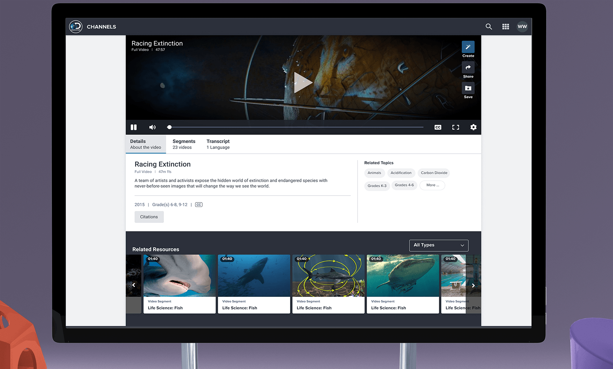
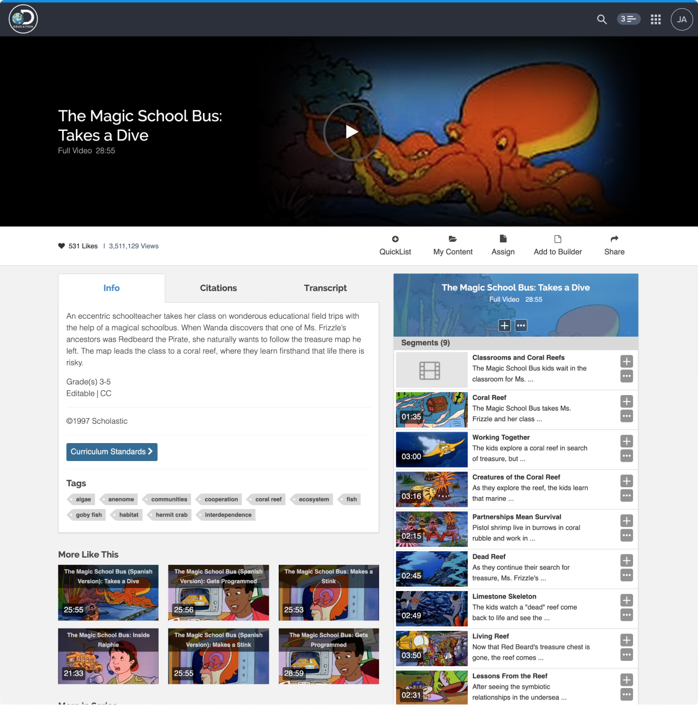
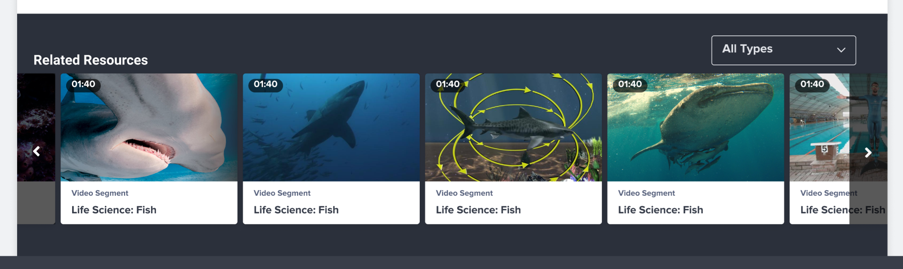
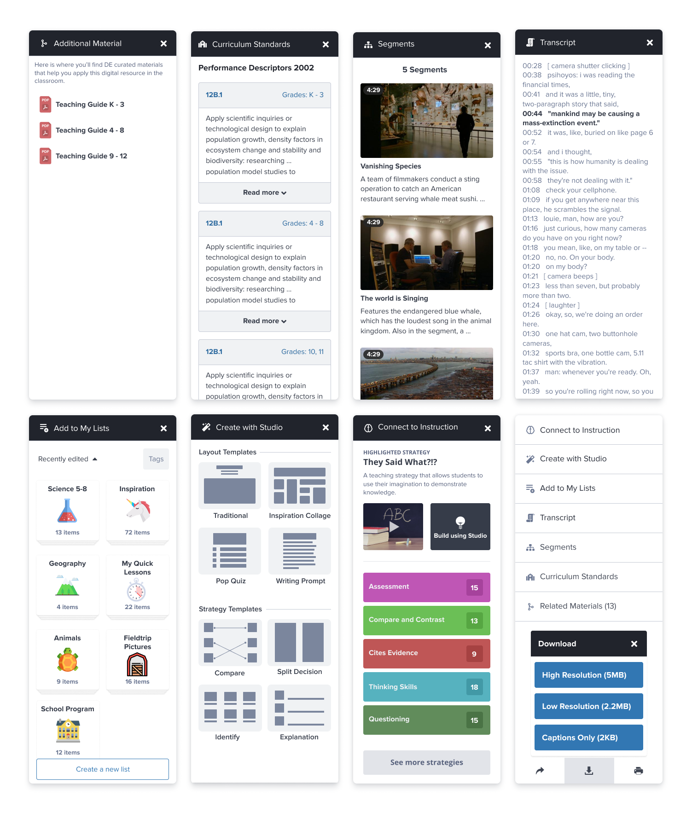
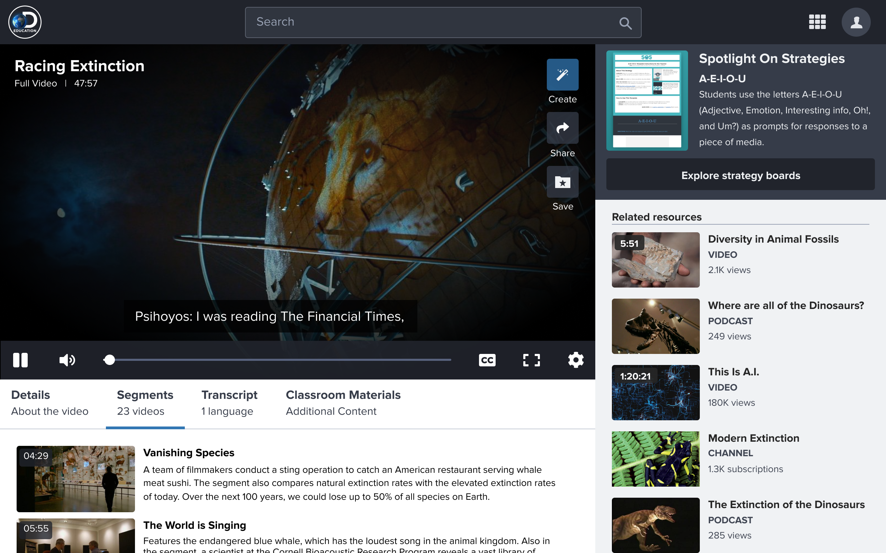
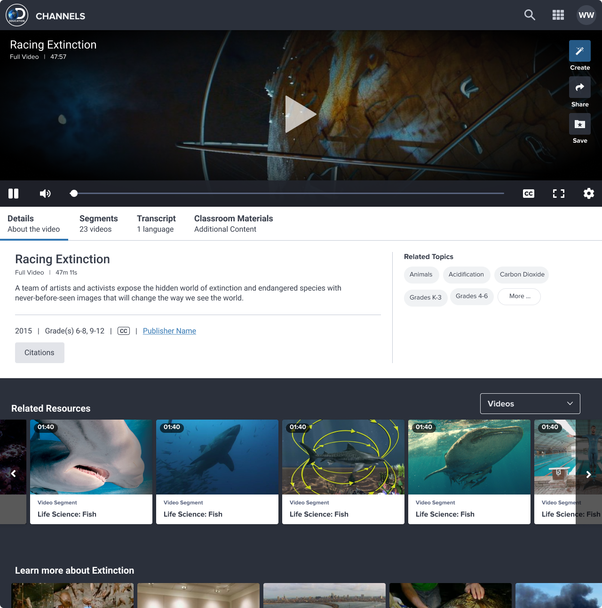
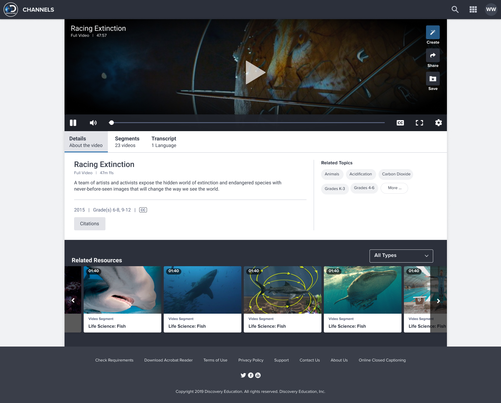

Discovery Education · Media Redesign
How short, focused design sprints produced compounding improvements to how children learn from video
The Resource Player was the single most-used page on the Discovery Education platform: the place where students and teachers actually engaged with educational content. After enough feedback made it clear the experience was falling short, we used design sprints to rethink it from the ground up, arriving at a solution that let the content do the work and gave teachers what they actually needed.

Most visited
Page on the entire Discovery Education platform
Sprint-based
Compressed, integrated design and research cycles
3 goals
Defined upfront, used to evaluate every decision
Before & after
Clear improvement in task success and content engagement
What is Player?
"Player" is shorthand for the Resource Player: the page where students and teachers view individual videos, documents, and interactive media on Discovery Education. It's not a flashy product. It doesn't have a lot of moving parts. But it's the most visited page on the platform, which means every friction point compounds across millions of sessions a day.
We approached the redesign around three core goals that research had identified as what students and teachers actually needed from the experience: understand the resource quickly, engage with it effectively, and know how to use it in the classroom. That third goal was the most distinctive. Discovery Education isn't just a media library. It's a teaching tool, and the Player needed to reflect that.

Role and team
We identified an opportunity to try design sprints as a way to compress and integrate our research, design, and development cycles. Rather than a long sequential handoff process, the sprint structure kept the team in close contact throughout, which meant decisions were grounded in research without creating bottlenecks.
I led UX throughout the process, from the initial research and framing through exploration, testing, and the final solution. Managing the balance between an informal, fast-moving process and a production-quality result required clear shared understanding of our goals and consistent communication about where we were relative to them.
What needed to change and why
The existing Player had accumulated a lot of features that made individual sense but collectively created noise. Low-value information was fighting for attention with the content itself. The hierarchy was off. Teachers were referencing secondary material before they'd fully engaged with the primary resource, and mouse tracking data showed users consistently drifting to areas outside the task they were trying to complete.
The core principle we kept returning to: familiar patterns, content first. Reduce what isn't earning its place. Reorganize what remains around what users actually need in the order they actually need it.

The "like" problem
One of the most consistent findings across multiple research rounds was genuine confusion around the like/heart interaction. Users couldn't agree on what it meant to like something. Was it an expression? A way to save something for later? A signal to the platform that affects what shows up in search?
The answer was: all three, depending on who you asked. Age, platform context, and icon choice all influenced how people interpreted it. The heart icon in particular produced consistently split reactions. This ambiguity wasn't just a UI problem. It was connected to saving, content weighting in search results, and a broader personalization system we were building in parallel.
Rather than ship an interaction we didn't fully understand and fix it mid-experience, we committed to solving it properly first. Introducing a broken pattern and then changing it is worse than taking more time to get it right.
Hierarchy and focus
Research sessions revealed a consistent pattern: teachers would move to supplementary material before they'd fully engaged with the main resource. Mouse tracking showed highlighting and attention in areas unrelated to the current task. We read this as a hierarchy problem. The page wasn't clearly communicating what mattered most, so users filled the ambiguity with their own navigation behavior.
The redesign addressed this by pulling the content to center stage and progressively revealing supporting information only after the primary experience had been established.
Incorporating new patterns
Discovery Education's platform had modular design patterns developed elsewhere in the product suite. Rather than inventing new conventions for Player, we pulled in and adapted patterns that users already understood from other contexts. This reduced the learning curve and gave the redesigned Player a consistency that felt like it belonged to the same product family.


Experimenting with process
Design sprints were genuinely new territory for this team. The compressed timeline and integrated workflow forced a kind of collaboration that more sequential processes don't require: decisions had to be made with incomplete information, shared quickly, and revised without ceremony.
Work happened in Figma, in HTML prototypes, and on calls. The fluidity between research, design, and development during a sprint produces a different quality of output than a traditional handoff model. Not always better in every dimension, but significantly faster to a tested, grounded solution.
When research, design, and development are truly integrated rather than sequential, the feedback loops get short enough that you can feel them in real time. That changes how you make decisions.
The redesigned Player
After several weeks of sprint cycles, the team converged on a solution that met all three of our original goals. The content leads. Supporting information is organized around the natural sequence of how a teacher or student would engage with a resource. The interaction patterns are familiar and consistent with the rest of the platform.



Retrospective
The new experience improved content engagement and reduced the friction users had reported around navigating supplementary material. Task success rates improved and the signal noise that was pulling attention away from the primary resource was significantly reduced.
Aspect ratios and the Chromebook problem
One technical constraint that shaped design decisions throughout: Chromebooks are by far the most common device in K–12 classrooms, and many of them are hybrid devices with non-standard aspect ratios. A video-heavy page that looks great on a standard widescreen can be significantly degraded on a Chromebook in tablet mode.
We implemented vertical media queries alongside standard breakpoints to handle these cases. It was a small but important investment. Every student deserves the same quality of experience regardless of what device their school issued them.
- Led UX across research, information architecture, interaction design, and final solution
- Introduced and ran design sprints as a new workflow for the team
- Conducted multi-round usability studies to surface hierarchy and interaction issues
- Resolved a long-standing ambiguity in the platform's like/save interaction model
- Applied and adapted modular patterns from the broader Discovery Education design system
- Addressed cross-device parity with vertical media query implementation for Chromebooks
- Presented final solution to stakeholders with full rationale grounded in research findings